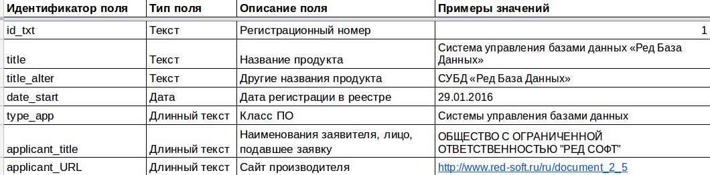

- Задание для летней практики 2017
Приложение - консольное.
Чтобы запустить программу, необходимо написать следующие команды в терминале:
git clone https://github.com/moskanka/DataMining
./get-reestr-mtmc.sh
В процессе работы приложение заходит на сайт Единого реестра российских программ для ЭВМ и БД и собирает оттуда необходимую информацию. Результаты записываются в файл reestr.csv, а так же выдаются прямо в консоль в csv-формате
Кодировка csv-файла: UTF-8 без BOM.
Ошибки выдаются в отдельном потоке - stderror
Пример работы программы для одной из программ реестра:
- Страница продукта:

- Выходной
csv-файл: - Если во входных данных нет искомого поля, то в него ставится значение по умолчанию, а если оно не оговоренно, то поле оставляется пустым.
Документация функций и классов:
Чтобы открыть документацию к этому приложению необходимо написать в терминале (находясь в корневой папке проекта):
doxygen Doxyfile
cd html
gnome-open index.html
Так же можно вручную открыть файл index.html в удобном вам браузере.